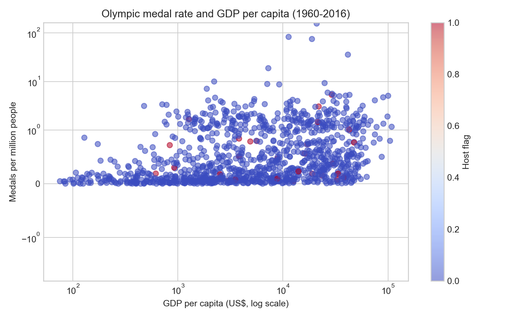
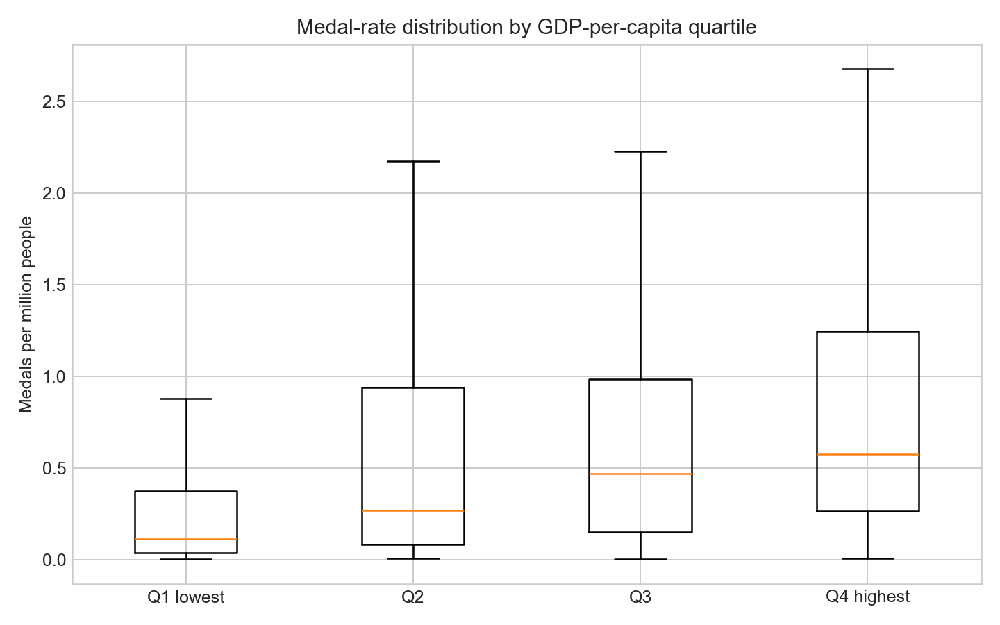
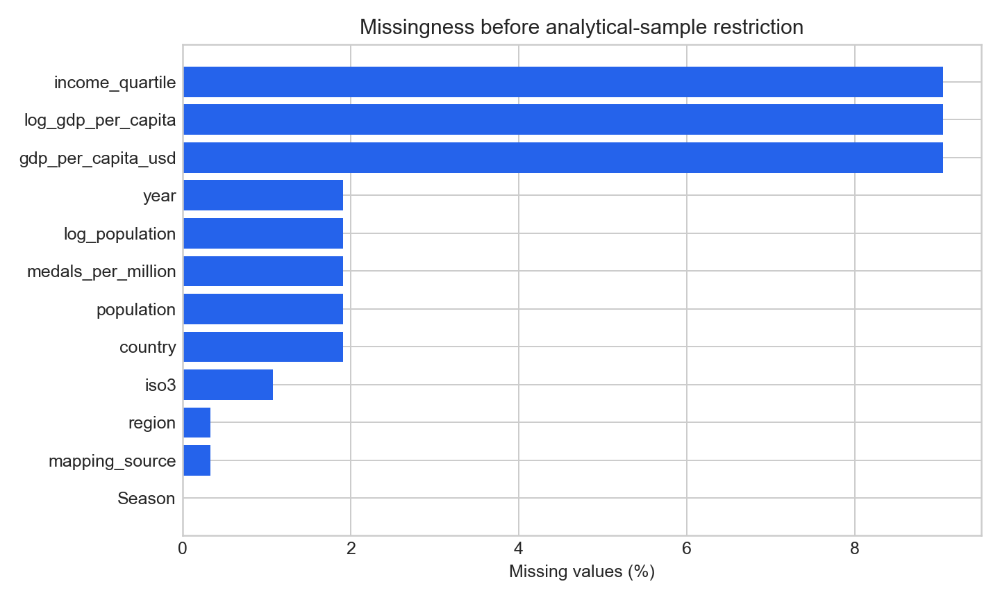
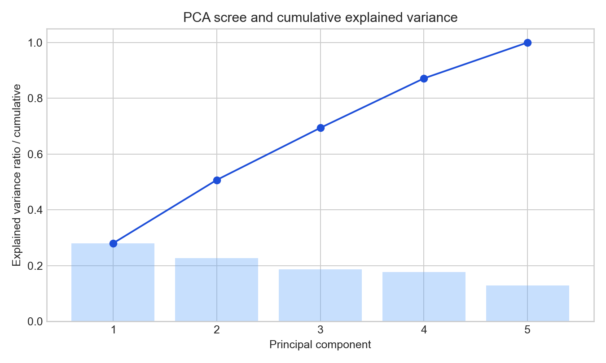

Country-Olympic-edition analysis, 1960-2016. Associations are descriptive, not causal.




Recommendations: benchmark medal performance per population, compare host editions to country baselines rather than raw totals, and use GDP/population as context rather than deterministic targets.